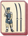
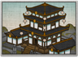

Requires
- Arts: 
Enables
- Buildings: 
- Arts:

Effects
- Increases the experience of all non samurai land units recruited by +1
Description
To become master,
You must overcome weakness.
Cast aside all fear,
Step gladly into the dark,
And meet death as an old friend.
Mastery is not posturing to impress a judge in a tournament. It is a practical matter: the business of killing quickly and honourably.